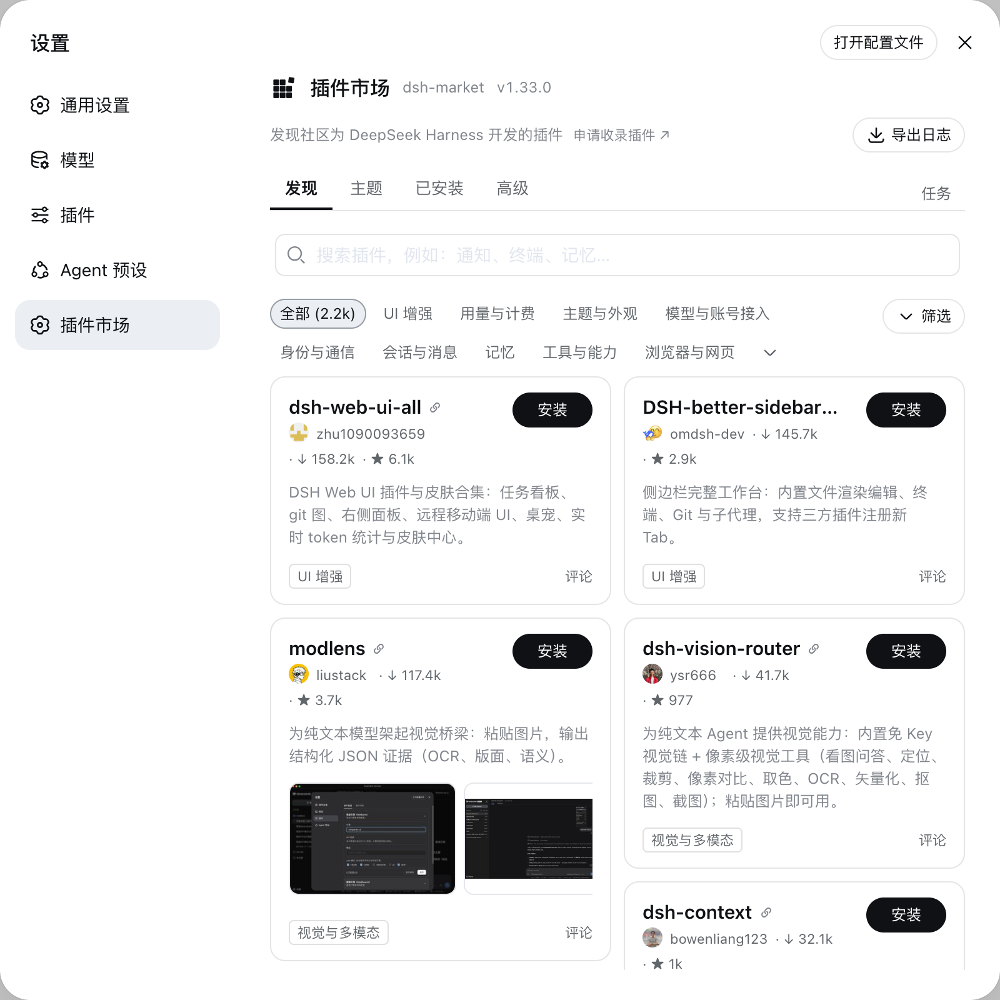
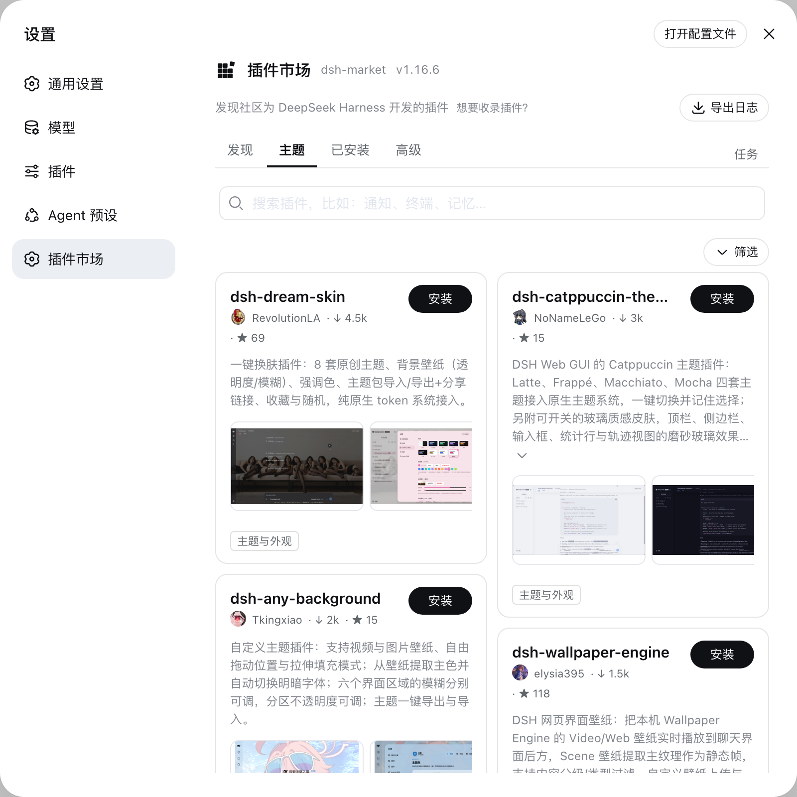
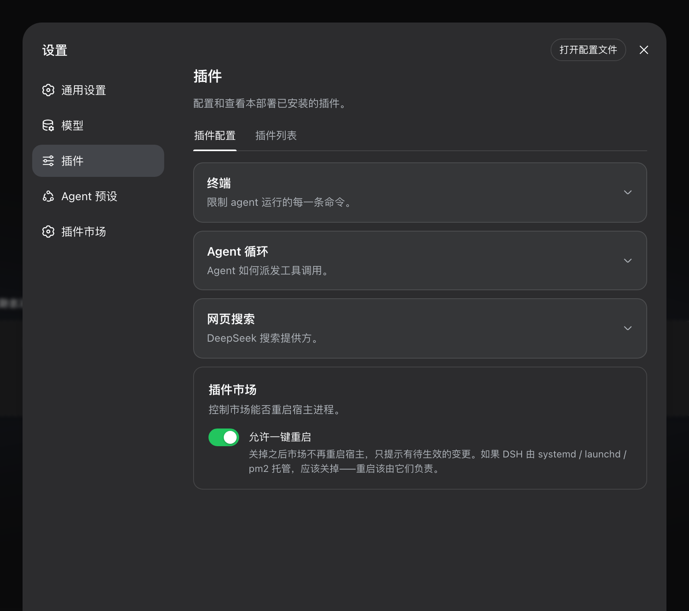

先澄清一个大概率会搞混的事：上上篇 EP09 讲 dsh-web 时提过它的"创意工坊"（域名 dsh-market.com，带连字符），这一篇的 dsh-market（域名 dshmarket.com，没连字符）是另一个项目——一个是 dsh-web 自家的皮肤/宠物工坊，一个是独立发展的通用插件市场，3,186 star，名字撞车纯属生态内卷——这篇帮你把两者彻底分清，谁管什么、怎么共存，一次说清。这篇拆的是后者。还是先对号入座。
场景一：装插件全靠背命令。 翻 README 找包名、抄 dsh plugin add 命令、拼错重来、装完还得重启——装三个插件十分钟就没了，而且装完什么样你并不知道，全靠盲盒。你想要的其实是 App Store 那样：逛一逛，看截图，点一下。
场景二：插件装多了开始玄学。 装了十几个之后，有的功能失效了——是插件冲突？加载顺序不对？版本不匹配？没有工具能告诉你答案，只能逐个禁用二分排查，一排查就是一晚上。
场景三：换台电脑要重头再来。 插件清单、每家插件的配置、主题选择——全要手工重装重配，第二次总有一次漏装的。
dsh-market 一起解决：装在 dsh 里的插件市场。完整社区目录 2,300+ 插件（每天在涨），分类筛选、star 排序、App Store 式截图轮播、一键安装只是入口——它真正值钱的是把"装完之后"的事也全接住了：诊断、加载顺序、备份恢复、热开关。还是系列固定四段：接入、使用、截图切图看功能、源码简单分析大概实现。
● ● ●
dsh plugin --profile mkt11 add dshmarket
# 4 个包，840ms——本机实录，是目前系列里最快的一次安装
重启 dsh web，设置里多出插件市场一项。有一个容易忽略的前置：要求 dsh web 0.1.0-rc.6 或更新版本。——随后会有个待重启提示，无法热加载的变更旁有一键重启按钮，操作只接受本机同源请求。要求 dsh web 0.1.0-rc.6+，宿主太旧时它会自我禁用并在控制台说明原因——拿缺失的原语去硬渲染这种事它不干。市场自己也有设置卡（rc.7 起）：看当前版本、选更新通道（稳定版，或 Beta 抢先体验还在验证中的版本——只影响市场自己，不影响你装的其它插件；开发者模式还多一个「开发版」通道直接取开发分支构建）、更新或移除市场本身。移除时可勾选一并清理它写进补丁层的停用行——被它关掉的插件会恢复运行，而不是保持停用却再没有界面能打开它们。
● ● ●
逛与搜。 完整社区目录 2,300+ 按分类筛选、最热/最新排序，中英描述跟随界面语言。卡片是 App Store 式截图轮播：作者策展过的截图直接显示零额外请求，没策展的会在打开安装弹窗时自动从 README 抽取，图片只从 GitHub 图床加载。卡片上还展示插件通过 engines.dsh 声明的版本要求，可选筛选隐藏与当前宿主不匹配的——未声明、格式异常、暂时取不到清单的不会被猜成不兼容，保持可见，这个"不猜"的原则贯穿始终。
评论不散落。 每张卡片就地打开该插件的讨论，本地市场、目录站、官网三处共用同一条 GitHub Discussions（经 giscus）——一个插件只有一处对话，打开即加载，只有发言才需要 GitHub 账号。
收藏与更新。 在发现或主题页点书签即收藏，「收藏」Tab 集中管理，书签写进 profile 的状态文件，已下架条目一键清除。更新是逐插件检测（npm 版本对比，或锁定 commit 对比 HEAD），一键更新或全部更新——市场自己也走同一通道升级，不搞特殊。卸载有两步确认防误触，本次会话装的插件即点即卸。
热禁用 / 启用。 这是它最"懂 dsh"的功能：开关往 profile 的 cordis.patch.yml（官方补丁层）写入停用行，dsh 的热重载约 1 秒生效，不用重启；手工改过的补丁行显示徽标提醒，宿主基础设施插件禁止开关，补丁文件格式不对时绝不会被写得更糟。
诊断与加载顺序。 插件加载顺序与冲突一页看全：bundle 栈（官方/社区徽标）、重复 loader 条目、依赖版本不一致、核心包多版本共存、覆盖项与非法配置条目——术语说人话，问题块高亮，全部可折叠。社区 bundle 的顺序还能拖拽调整，或直接采用按插件 before/after 规则推导的建议顺序；写入前先跑静态组合校验，应用前告诉你这个顺序会改变什么（多少处覆盖、多少无效或重复条目）。
零术语与可托付的细节。 缺 pnpm？市场自己发现、一键装好，全程不见命令行。一键导出脱敏日志方便反馈——home 路径与密钥形状已打码，任何数据都不会被上传。插件作者还能调它的更新 API v1（带版本号、能力探测和回滚状态），不用自己复制包管理逻辑。
备份与恢复。 插件清单与配置导出为可读 JSON，存 WebDAV 每日自动备份，或经私有 GitHub Gist 跨机器同步。恢复是合并式的——备份之后新装的插件会保留，而不是拿旧快照覆盖掉你后来装的东西；写入前校验、失败自动回滚。场景三的答案是完整闭环。
大陆网络专项优化。 中国大陆下载区域为 Git ref、README、头像分别维护 fallback 线路顺序，记住上次可用的那条，只在传输失败、HTTP 状态异常或响应内容校验失败后换线——拒绝公共反代伪装成 HTTP 200 的 HTML 错误页这种脏活它都写了；内置线路全挂时，可在设置里填持久化的自定义 HTTPS 加速前缀，运维设置的 DSHM_GITHUB_PROXY 始终优先。
● ● ●
市场主界面——分类、排序、star 数、安装按钮：

图：dsh-market 市场主界面（官方仓库截图）
图：dsh-market 市场主界面（官方仓库截图）
主题页——一键换装，互斥切换、跨重启保留、卸载即恢复：

图：主题页，点一下切换不用重启（官方仓库截图）
图：主题页，点一下切换不用重启（官方仓库截图）
设置卡——市场在设置里管理它自己：

图：市场的设置卡片（官方仓库截图）
图：市场的设置卡片（官方仓库截图）
● ● ●
这个项目单文件不大，但 README 里几乎每一句话背后都对应一类真实翻车场景，源码结构就是围着这些场景组织的：市场逻辑、宿主通信层、站点生成（dshmarket.com 与目录站是它的静态产物）三块，测试文件比业务文件还厚（TESTING.md 单独成文）。
热开关的机制出处也交代了：往官方补丁层写行的做法移植自 dsh-plugin-hub（Noob-stupid 出品），README 里明确标注了来源——站在社区前作肩膀上且注明出处，这个生态的自我引用是健康的。
两条硬规矩：只允许安装 awesome-dsh-plugin 精选列表内的来源，其它一律拒绝；构建脚本默认禁止执行（pnpm ≥10），放行与否由你按包显式决定。市场是"装第三方代码"的地方，入口的白名单和脚本的默认拒绝，比任何功能都重要。 awesome-dsh-plugin 就是上一篇提过的那个 14,000+ star 合集，收录有评审清单——白名单挂在一个有审校流程的清单上，比市场自己临时审可靠。
装的方式有三档：优先用仓库验证过的 npm 包，其次作者发布的 GitHub Release 预构建 tarball（数秒装好、不跑本地构建），最后才回退整仓源码下载。
AI 修复的克制设计。 诊断结果可以一键生成修复 prompt 让你粘给 agent——但提示词会先让 agent 判断自己是不是就是这个 profile 所在的 harness，若是则严禁改动运行中组合、升级 harness 或重装依赖，只让它生成幂等的 apply 脚本和 rollback 脚本，由你在外部终端自己执行。让 AI 修，但修的每一步都在你手里。
热开关的实现值得单独记：往官方补丁层写 - id: … + disabled: true，靠 dsh 原生 HMR 重组——市场自己不发明机制，搭官方机制的便车，所以升级 dsh 也不会把它写坏。
update API 也值得插件作者知道：市场把更新能力开放成带版本号的 v1 接口（beta），插件自己的设置页可以直接调用——能力探测和回滚状态都是接口的一部分，不用每家插件自己复制一遍包管理逻辑。
● ● ●
dsh-market 的价值一句话：把 dsh 插件生态从"命令行的手艺"变成"应用商店的生意"。逛、搜、装是表，诊断、加载顺序、备份恢复、热开关是里——装插件这件事的完整生命周期它全管了。和 EP09 创意工坊的关系再钉一次：名字像、不是一回事，一个管 dsh-web 的皮肤宠物，一个管全生态的插件市场，都装也不冲突。安全上白名单 + 构建脚本默认禁的双闸门，是所有插件市场该抄的作业。
下一篇按门槛往下是 dsh-deep-whale（1,905★，鲸鱼娘皮肤系列）——连续拆了十期硬核插件，下一篇换个轻快的。
源码地址：github.com/dsh-market/dsh-market（npm：dshmarket）